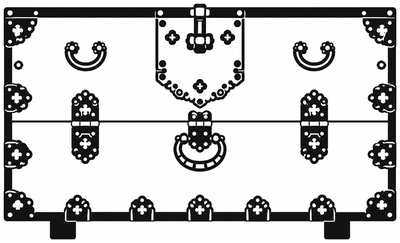

| 회차 | 경매일 | 출품 | 낙찰 | 유찰 | 낙찰률 | 낙찰가 합계 | 최고 낙찰 |
|---|
자료: 「아이옥션 목가구 도록 2023–2026」(공부용 정리본, 2026.10.17) 291점과 「아이옥션 목가구 도록 2022–2023」(2026.10.18) 204점, 같은 기간(2022년 3월~2023년 9월) 경매의 목기·소품 73점에, 2026년 경매 도록 6권(제64·65·66회 장터경매, 제72·73·74회 경매)에서 고른 목기·소품을 더했습니다. 추정가와 낙찰가는 아이옥션 홈페이지 「지난 경매 결과」에서 옮겼습니다. 사진은 아이옥션 서버에 남아 있는 가장 큰 사진을 썼습니다 — 제65·66·74회는 원본 사진(긴 변 2560px로 맞춤), 그 밖의 회차는 서버에 남은 최대 크기(616px). 낙찰가는 경매사가 망치를 내린 값이며, 구매수수료는 들어 있지 않습니다. 제66회 장터경매(10월 20일)는 결과까지 반영했습니다.
